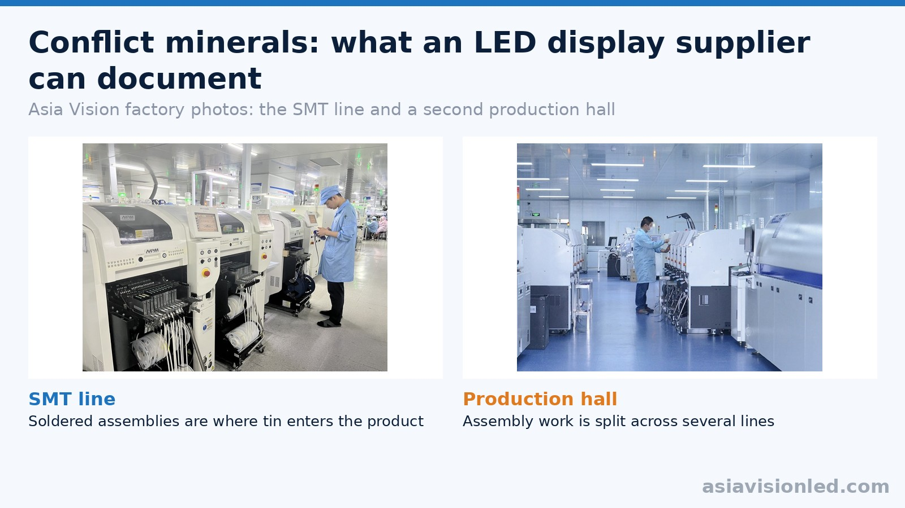
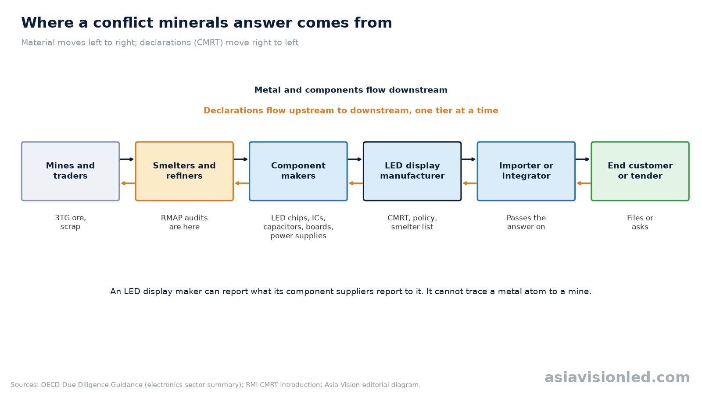
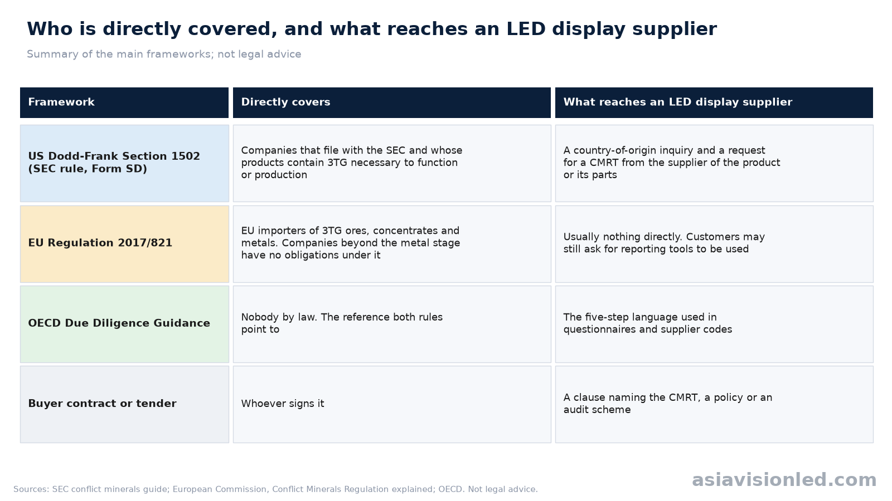
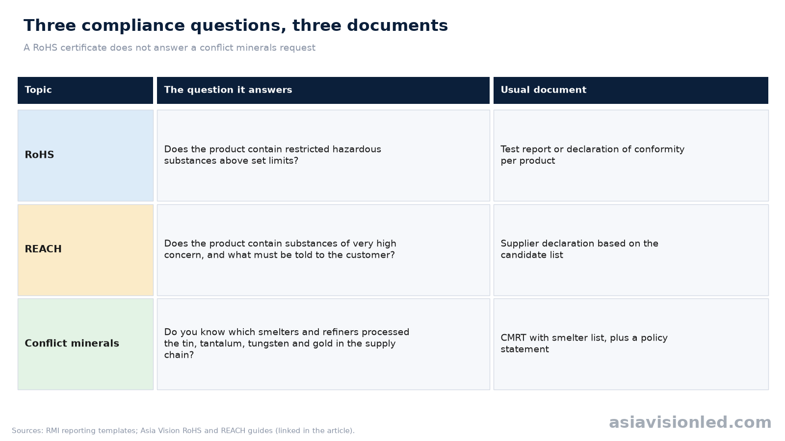

By Danny · 2026-11-13
If your customer or tender asks for a conflict minerals declaration, the document they usually mean is a CMRT, and an LED display supplier can answer it honestly only to a point. Conflict minerals are tin, tantalum, tungsten and gold, known as 3TG. They appear in solder, capacitors, plating and chip interconnects. An LED display maker buys components, not ore, so its answer depends on what its own component suppliers report back.
This guide is for enterprise, public-sector and import buyers, and for the sales and compliance staff who receive these requests. It explains what 3TG means for an LED screen, which rules actually trigger the request, how the CMRT and the RMAP audit scheme fit together, what a supplier can and cannot document, and how to word the request so you receive something useful. It is not legal advice. Check your own obligations with counsel.
The European Commission describes conflict minerals as tin, tantalum, tungsten and gold, which sometimes finance armed conflict or are mined using forced labour. The US rule under Section 1502 of the Dodd-Frank Act covers the same four minerals, with a focus on the Democratic Republic of the Congo and its adjoining countries. The EU regulation is wider in geography: it applies to conflict-affected and high-risk areas anywhere.
None of this means 3TG are banned. They are ordinary industrial metals. The rules ask a different question: do you know where they came from, and have you checked the smelters and refiners that processed them?
Electronics sourcing guides list the typical uses below. Which ones apply to a given LED display depends on its bill of materials, so treat the table as a map of questions to ask, not a statement about any one product.
| Mineral | Typical use in electronics | Where to ask in an LED display |
|---|---|---|
| Tin | Lead-free solder joints; plating on leads and contacts | Soldered module boards, receiving cards, power supplies, cables |
| Tantalum | Capacitors | Power supplies and driver boards, where tantalum capacitors are used |
| Gold | Connector and pad plating; fine bond wires | Connectors, board pads, LED and IC packages that use gold wire |
| Tungsten | Chip interconnects; contacts; tungsten carbide drill bits | Inside semiconductor components; drill bits used in board making are tooling, not in the product |
The key point is the tier. An LED display OEM buys LED chips, driver ICs, boards, capacitors, power supplies and connectors from component makers, who buy metals from traders and smelters. The OEM sits several steps from the mine, as the next chart shows.

Supply chain tiers. Declarations (CMRT) flow upstream to downstream; the smelter and refiner tier is where audits focus.
The request usually reaches an LED supplier through one of three routes. The chart summarises who is directly covered.

Who is directly covered by each framework, and what reaches an LED display supplier.
US-listed customers. The SEC rule applies to companies that file reports with the SEC and use 3TG that is "necessary to the functionality or production" of a product they manufacture or contract to manufacture. They must run a good-faith reasonable country-of-origin inquiry, and file Form SD each year by 31 May for the previous calendar year. A US-listed buyer of LED displays for its own use is often not the covered party. A US-listed company that contracts an LED screen to be built to its own design can be. Suppliers receive the inquiry either way.
EU importers. Regulation (EU) 2017/821 applies directly to EU importers of 3TG ores, concentrates and metals. The Commission says downstream companies that operate beyond the metal stage have no obligations under the regulation, but are expected to use reporting and other tools to make their due diligence more transparent. An EU importer of finished LED screens is therefore usually not directly covered. Their own large customers or tender documents may still ask. See our EU import certification guide for the product rules that do apply.
Tenders and corporate policies. Many enterprise and public buyers write a responsible-minerals clause into their supplier code or tender, without being legally required to. See our tender specification guide and public procurement guide.
Both the US and EU rules point to the same reference: the OECD Due Diligence Guidance for Responsible Supply Chains of Minerals from Conflict-Affected and High-Risk Areas. Its five steps are the language buyers use in questionnaires:
The OECD's electronics-sector summary tells electronics companies to map their supply chains to the smelters and refiners, and downstream companies to assess the due diligence of those smelters through third-party audits. That is why the CMRT focuses on the smelter list.
The Responsible Minerals Initiative (RMI) provides free, standardised templates for passing information along the supply chain about mineral origin and the smelters and refiners in use. The Conflict Minerals Reporting Template (CMRT) covers tin, tantalum, tungsten and gold. RMI lists April 2026 as the date of the latest CMRT version with functional changes. Suppliers complete a company declaration, a product list and a list of smelters and refiners. The RMI does not collect completed templates. Suppliers give them to their customers.
The CMRT's Smelter Reference List is a partial list that the RMI updates about every other week. A smelter appearing on it is not the same as being audited. The audit is the Responsible Minerals Assurance Process (RMAP), also run by the RMI. In October 2025 the European Commission recognised RMAP as aligned with the EU regulation's requirements, so EU importers of the metals can rely on it. RMAP audits smelters and refiners. It does not certify finished products.
Two sister templates exist. The Extended Minerals Reporting Template (EMRT) covers cobalt, copper, natural graphite, lithium, natural mica and nickel, and is aimed partly at battery rules. The Additional Minerals Reporting Template (AMRT) lets a buyer name its own minerals. If you receive an EMRT or AMRT request, check which minerals actually apply to an LED display before you answer.
A reasonable supplier response has these parts, and a buyer should expect no more than these:
What a supplier cannot honestly give is just as important:
As a buyer, read a thin answer as a gap to close with the supplier, not as a refusal. As a supplier, a candid CMRT with open items is worth more than a clean-looking one that cannot be defended.
Understanding the workflow helps a buyer set realistic expectations and a realistic deadline:
Step 3 is the one that sets the timetable, because it depends on other companies. A buyer who asks for the declaration the week before a tender closes is likely to receive an incomplete one. Ask early, and ask for a status note if the full file is not ready.
Sample RFQ clause (adapt with your counsel):
Three tips make the clause more useful. Ask for the same reporting period your own filing uses, because the SEC cycle is a calendar year. Ask for the current template version rather than a PDF printout of an old one. And do not ask for a "conflict-free certificate": no such product-level document exists, so you are inviting a claim nobody can support.
Buyers sometimes treat these as one box to tick. They are not.

Three compliance questions, three documents. A RoHS certificate does not answer a conflict minerals request.
See our guides to RoHS compliance and REACH compliance. Supplier-side checks are covered in the supplier due diligence guide.
Asia Vision is a Shenzhen LED display manufacturer founded in 2015 with a 5,000 m² factory and ISO 9001, CE, FCC, RoHS, ETL and CCC certifications. Those are product and quality credentials. They are not a conflict minerals declaration, and we do not present them as one. If your customer or tender asks for a CMRT, send us the template and the products you plan to buy. We will tell you what we can document and which items depend on our component suppliers' replies. See our factory page for how production is organised.
Every order carries a 3-year standard warranty and leaves our factory within 18 days of order confirmation. There is no MOQ and no tooling fee.
Send the template (CMRT, EMRT or your own questionnaire) and the products you plan to buy. We will tell you what we can document and which items depend on component suppliers. Email info@asiavisionled.com or message us on WhatsApp at +86 172 7666 5558.
Send Your TemplateChat on WhatsApp